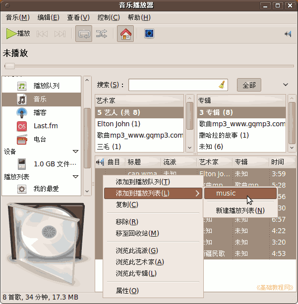

Ubuntu/GNOME 桌面程序指南
作者：TeliuTe 来源：基础教程网
八十二、Rhythmbox 音乐播放器 返回目录 下一课使用它，您可以播放本地音乐、MP3 便携播放器、音频CD 等；
1、Rhythmbox 音乐播放器
1）点菜单“应用程序 - 影音 - Rhythmbox 音乐播放器”，打开窗口；
2）插入 MP3 播放器，会自动弹出询问对话框，点“确定”打开音乐播放器；
3）左栏是音乐库和Mp3设备，以及播放列表；
4）点上面的工具栏中，可以点“播放”按钮播放，设定循环播放或乱序播放；
5）在左侧栏的“播放列表”，选择“我的最爱”列表，右边显示空白，现在里面还没有音乐；
6）点菜单“音乐 - 导入文件”，在打开的文件对话框中选择多个文件；
7）导入的曲目放在左侧的“音乐”库中，可以新建音乐列表，转移到列表中，注意文件还在原来地方，这只是列表；

本节学习了Rhythmbox 音乐播放器的基础知识，如果你成功地完成了练习，请继续学习下一课内容；
本教程由86团学校TeliuTe制作|著作权所有
基础教程网：http://teliute.org/
美丽的校园……
转载和引用本站内容，请保留版权信息和本站链接。